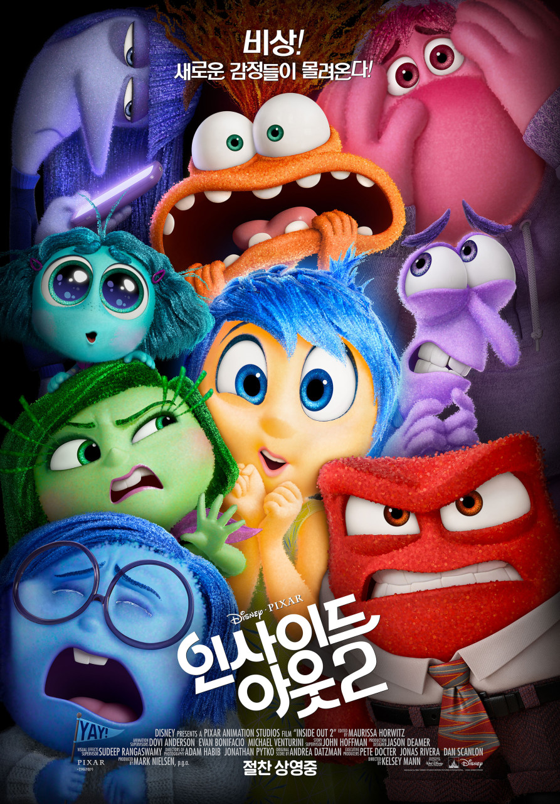

쌓인 기록 52편
| Release | 2024.08.14 |
|---|---|
| Runtime | 122분 |
| Age Rating | 12세 이상 관람가 |
| Director | 정이삭 |
| Cast | 글렌 파월, 데이지 에드가 존스, 안소니 라모스 |
| Date | |
|---|---|
| Time | |
| Theater | |
| Screen |

| Release | 2024.06.12 |
|---|---|
| Runtime | 96분 |
| Age Rating | 전체 관람가 |
| Director | 켈시 맨 |
| Cast | 에이미 포엘러, 마야 호크, 루이스 블랙, 필리스 스미스, 토니 헤일 |
| Date | 2024.06.19 |
|---|---|
| Time | 15:20 ~ 17:06 |
| Theater | 롯데시네마 (신중동역) |
| Screen | 1관 |
| Release | 2000.00.00 |
|---|---|
| Runtime | 90분 |
| Age Rating | 전체 관람가 |
| Director | 하라 케이이치 |
| Cast | 야지마 아키코, 나라하시 미키, 후지와라 케이지 |
| Date | |
|---|---|
| Time | |
| Theater | |
| Screen |